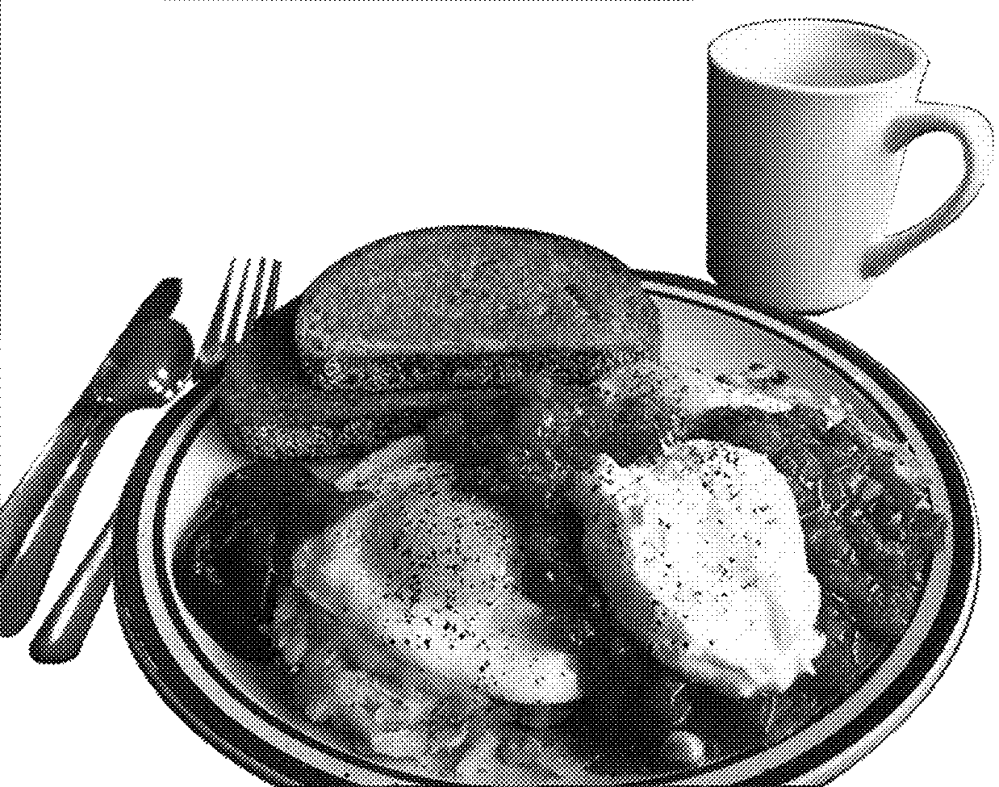

Five Corners Cafe
Fiver Corners Cafe is White Rock BC's oldest resteraunt. An eclectic 50's diner needed a little bit of updating without sacraficing
their unique brand. I worked with the client to redesign their menu, as well as create graphics for merchandise, buisness cards and promotions!


